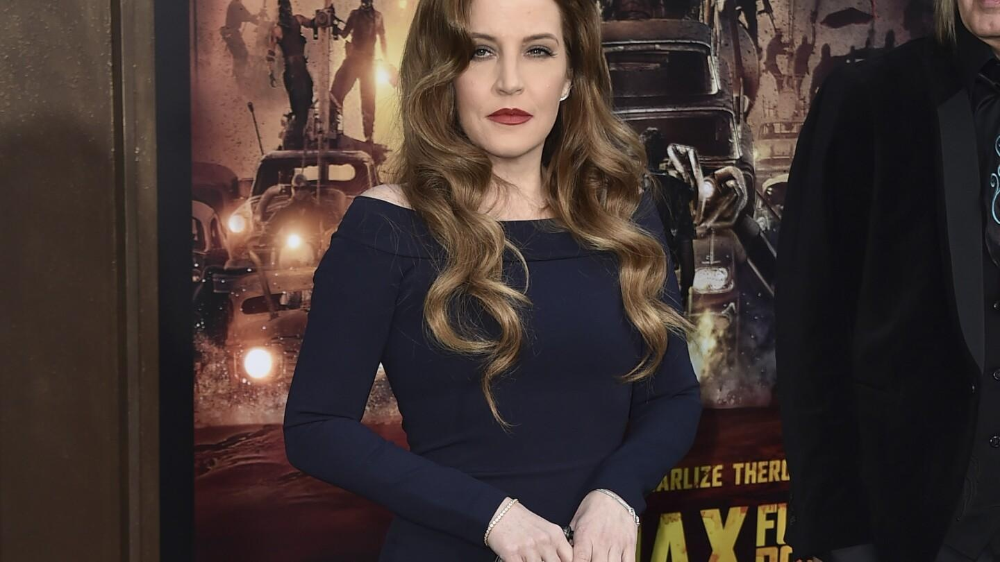

Lisa Marie Presley died from small bowel obstruction caused by bariatric surgery, coroner saysLisa Marie Presley died from small bowel obstruction caused by bariatric surgery, coroner says LOS ANGELES (AP) — Lisa Marie Presley died from complications from bariatric surgery she had several years ago, authorities said Thursday. The January 12 death at age 54 of the singer, songwriter and heir of Elvis Presley was ruled as being from natural causes due to effects of a small bowel obstruction. Additional details about what caused Presley’s death were included in an autopsy report released Thursday afternoon by the office of the Los Angeles County Medical Examiner-Coroner. The report says the complication that Presley experienced is a common complication from bariatric surgery, which is a weight loss procedure. The Mayo Clinic says it is often done when other weight loss methods haven’t worked or if a person has a serious medical condition. Presley died at a Los Angeles hospital, where she had been rushed by paramedics responding to a 911 call of a woman in cardiac arrest at her home. No indication was made public at the time of what may have caused the medical issue. The autopsy report said she had been complaining of stomach pain earlier in the day. She was buried at a Jan. 22 funeral at Graceland, the home where she lived with her father as a child that has become a museum, tourist attraction and shrine for Elvis fans. Presley left behind three daughters, 34-year-old “Daisy Jones & the Six” actor Riley Keough and 15-year-old twins Harper and Finley Lockwood. A son, Benjamin Keough, died in 2020. In the immediate aftermath of her death, it appeared that a major legal fight would ensue over Presley’s estate. Four days after her funeral, her mother, Priscilla Presley, filed court documents disputing a 2016 amendment to Lisa Marie Presley’s living trust that removed Priscilla Presley and a former business manager as trustees and replaced them with her two eldest children. But Priscilla Presley and Riley Keough – who is now acting as sole trustee – agreed to a settlement in May. Riley Keough was nominated for her first Emmy on Wednesday, for best actress in a limited series or TV movie for “Daisy Jones & the Six.” |
 |